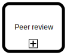

Introduction to BPMN#
Business Process Model and Notation (BPMN) is a graphical representation for specifying business processes in a business process model Wikipedia. Its design was influenced by the Workfow Patterns initiative to cover most of the identified control-flow patterns.
Although originally designed for business workflows, BPMN is now widely used for general process automation and orchestration across IT systems—including microservice choreography, RPA, and integration workflows.
This is an opinionated introduction to some of the most common BPMN 2.0 symbols and their uses from a task automation perspective.
Sequence flow#
{kind=link}
BPMN sequence flow is made up of at least one  start event, one
start event, one  end event, and any number of
end event, and any number of  tasks (BPMN activities) connected between them.
tasks (BPMN activities) connected between them. sequence-flow.bpmn#
Naming of elements#
{kind=link}
BPMN flow elements should be named using terms from the business domain of the process. Events should be named to describe the business state of the process. Tasks (BPMN activities) are named using verbs to describe what actions to take in the process. sequence-flow-annotated.bpmn#
Element |
Label Pattern |
Example |
|---|---|---|
Start Event |
Noun + Past Participle / Trigger |
“Request received” |
Task |
Verb + Object |
“Handle request” |
End Event |
Result or Outcome |
“Request handled” |
Gateways and paths#
{kind=link}
BPMN gateways control which one of the available paths is taken at the time of execution. The  exclusive gateway in the example allows only one path to be followed at a time, either splitting or joining the flow.
exclusive gateway in the example allows only one path to be followed at a time, either splitting or joining the flow. gateways-and-paths.bpmn#
Conditional flows#
{kind=link}
With exclusive gateways, you can direct the flow of the process based on the results from completed tasks. sequence-flow-redux.bpmn#
Concurrent tokens#
{kind=link}
A BPMN token is a theoretical concept used to define the behavior of a process being performed. There can be any number of concurrent tokens in a single running process. For example, a  parallel gateway creates a new token for each outgoing path. The process is completed only when all tokens have been consumed.
parallel gateway creates a new token for each outgoing path. The process is completed only when all tokens have been consumed. concurrent-tokens.bpmn#
Inclusive gateway#
{kind=link}
The  inclusive gateway in the example allows multiple paths to be followed simultaneously, depending on the conditions defined. This means one or more paths can be taken based on the evaluation of the conditions.
inclusive gateway in the example allows multiple paths to be followed simultaneously, depending on the conditions defined. This means one or more paths can be taken based on the evaluation of the conditions. gateways-inclusive-paths.bpmn#
Multiple end events#
{kind=link}
Not all BPMN tokens need to reach the same end event for the process to be considered complete. A BPMN process may have as many end events as it makes sense for the business process it describes. Not all end events need to be reached for the process to complete; the process completes when there are no more tokens alive. multiple-end-events.bpmn#
Events at boundary#
{kind=link}
Attaching events to element boundaries is where BPMN really shines. In this example, a non-interrupting timer boundary event is used to send notification about test execution taking too much time. Non-interrupting events, as the name suggests, don’t interrupt the task they are connected to. Instead, they create a new token for the path they start (in the example, once or regularly as long as the task has not been completed). boundary-events.bpmn#
Errors at boundary#
There are two kinds of errors in BPMN-driven process automation:
Application errors, which are caused by technical issues like network outages or programming errors, and can be fixed by retrying the failing part of the process once the technical issue has been resolved.
Business errors, which are known exceptions in the process itself, and cannot be fixed by simply retrying, but must be expected and handled on the BPMN diagram level instead.

In this example, a business error is expected with a  error boundary event (which is always interrupting), and it is used to route the process to an alternative business error end event for further re-routing in the calling parent process.
error boundary event (which is always interrupting), and it is used to route the process to an alternative business error end event for further re-routing in the calling parent process. boundary-bpmn-error.bpmn#
Embedded sub-process#
{kind=link}
Embedded sub-process is a process with its own start event and end event(s) within its host process. It is a powerful pattern to use for wrapping tasks that should share some boundary events. In this example, an  interrupting boundary timer event is used to cancel the whole sub-process.
interrupting boundary timer event is used to cancel the whole sub-process. embedded-subprocess.bpmn#
Note
The example above could also be implemented using multiple boundary events on a task. However, this would change the behavior by allowing the task to handle multiple events simultaneously. Each boundary event could trigger different actions or paths, providing more flexibility and complexity in the process flow.
This approach is useful when a task needs to respond to various conditions or events without interrupting the main process flow.
{kind=link}
Event sub-process#
{kind=link}
Event sub-process can either interrupt the execution of the main process (with an interrupting start event) or run sub-processes in parallel to the main process (with a non-interrupting start event). The example demonstrates the latter with a  non-interrupting start timer event.
non-interrupting start timer event.
event-subprocess.bpmn#
Externalized sub-process#
{kind=link}
 Call activity is used to encapsulate and reference a reusable sub-process or another process, allowing for modular and maintainable process designs. In this example, it is used to hide the embedded sub-process details from the earlier examples.
call-activity-process.bpmn#
Basic task types#
The examples above use only the so-called undefined task. This is useful for drafting and documenting processes, but not for actually implementing and automating them. There are many more specific task types available.
Service task#

Service task represents an automated task. Process engines commonly enqueue service tasks for external workers to consume. The workers perform the work and complete the task, returning any required results.#
Call activity#
{kind=link}
Call activity calls a separately configured sub-process, which is defined outside of the main process (unlike an embedded sub-process). It allows abstraction of recurring parts of a process into reusable sub-processes, reducing clutter.#
User task#

User task is a task meant to be completed by a human via a connected user interface. The most common way to implement a user task is to show the user a form.#
Symbol summary#
Symbol |
Description |
|---|---|
|
Start event |
|
End event |
|
Task |
|
Service task |
|
User task |
Call activity |
|
|
Exclusive gateway |
|
Parallel gateway |
|
Inclusive gateway |
Non-interrupting timer boundary event |
|
|
Error boundary event |
|
Interrupting timer boundary event |
|
Non-interrupting timer sub-process start event |